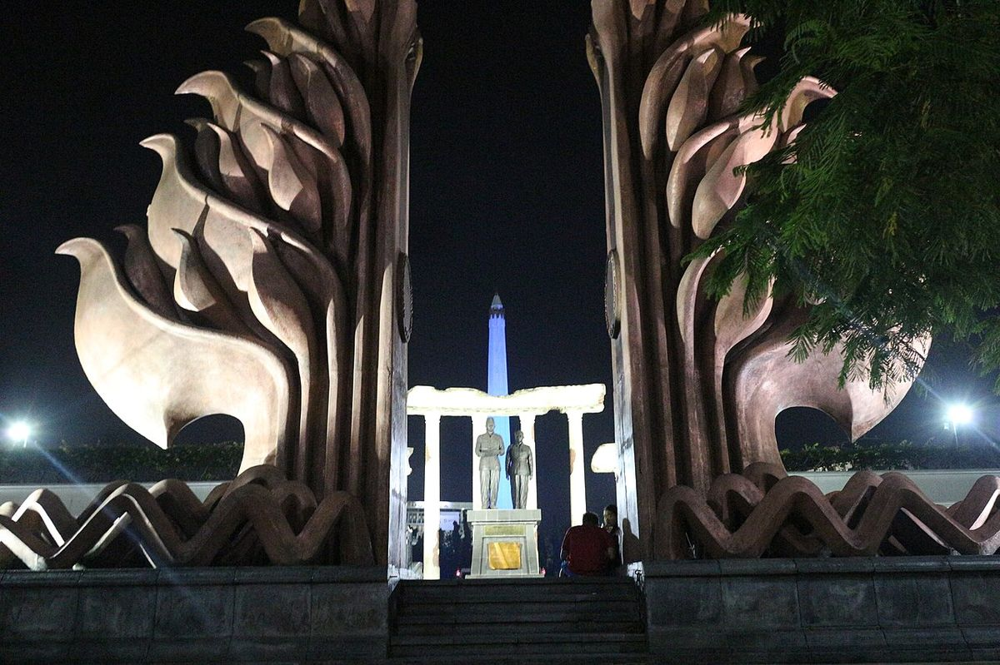
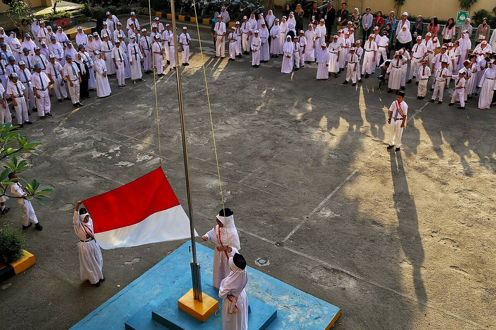

Besok, Selasa 10 November 2026, upacara Hari Pahlawan digelar serentak mulai pukul 08.00 waktu setempat di instansi pemerintah, sekolah, dan lembaga di seluruh Indonesia. Kementerian Sosial sudah menerbitkan pedoman resminya lewat surat nomor S-1090/MS/PB.06.00/11/2026 yang ditandatangani Menteri Sosial Saifullah Yusuf pada 5 November 2026.
Peringatan tahun ini memakai tema Pahlawanku Teladanku, Melangkah Bersama, Melanjutkan Perjuangan. Upacara bendera jadi acara wajibnya dan dimulai pukul 08.00 waktu setempat, di lapangan terbuka atau tempat lain yang disesuaikan kondisi masing-masing daerah. Susunan acaranya ada 12 tahap, mulai dari penghormatan kepada pembina upacara, pengibaran bendera Merah Putih diiringi lagu Indonesia Raya, mengheningkan cipta, pembacaan Pancasila dan Pembukaan UUD 1945, pembacaan pesan-pesan pahlawan, amanat pembina upacara, sampai pembacaan doa. Pukul 08.15 waktu setempat, seluruh masyarakat diajak hening cipta serentak selama 60 detik. Masyarakat juga diimbau mengibarkan bendera Merah Putih satu tiang penuh di rumah dan lingkungan masing-masing pada 10 November 2026. Peringatan ini bukan hari libur, jadi aktivitas sekolah dan kantor tetap berjalan seperti biasa.
Kenapa 10 November diperingati sebagai Hari Pahlawan?
Tanggal 10 November dipilih untuk mengenang Pertempuran Surabaya tahun 1945, ketika para pejuang mempertahankan kemerdekaan Indonesia dari pasukan Sekutu. Peringatan ini ditetapkan sebagai hari nasional lewat Keputusan Presiden Nomor 316 Tahun 1959. Tema tahun ini mengajak kamu melihat pahlawan sebagai teladan, bukan cuma nama di buku sejarah. Maknanya sederhana: perjuangan tidak berhenti di medan perang, tapi lanjut lewat hal-hal kecil sehari-hari, seperti belajar sungguh-sungguh, bekerja jujur, dan peduli sama orang di sekitarmu. Itu sebabnya upacara besok bukan sekadar formalitas. Ia pengingat bahwa kemerdekaan yang kamu nikmati sekarang dibayar mahal oleh orang-orang yang namanya mungkin tidak pernah kamu hafal.

Foto: Eny Santiati, CC BY-SA 4.0, via Wikimedia Commons
Jam berapa upacara Hari Pahlawan 2026 dimulai?
Upacara dimulai pukul 08.00 waktu setempat, jadi jamnya mengikuti zona waktu tempat kamu berada. Di Jawa dan sebagian besar wilayah barat, itu berarti 08.00 WIB. Upacara bisa digelar di lapangan terbuka atau di tempat lain yang disesuaikan dengan kondisi daerah masing-masing, dan suasananya diminta khidmat, tertib, dan sederhana. Ada satu momen yang waktunya sama di seluruh Indonesia: hening cipta serentak selama 60 detik pada pukul 08.15 waktu setempat. Jadi walau kamu tidak ikut upacara, kamu tetap bisa ikut diam sejenak pukul 08.15 besok pagi. Selain upacara, ada rangkaian kegiatan nasional lain pada 10 November 2026: ziarah nasional dan renungan suci di Taman Makam Pahlawan Nasional Utama Kalibata mulai pukul 00.00 WIB, tabur bunga di laut Perairan Teluk Jakarta pukul 08.00 WIB, dan penganugerahan gelar pahlawan nasional di Istana Negara.

Foto: Arifinulburhan, CC BY-SA 4.0, via Wikimedia Commons
Apa saja susunan acara upacara Hari Pahlawan 2026?
Pedoman Kemensos menetapkan 12 tahap dalam upacara besok. Urutannya seperti ini:
- Penghormatan umum kepada pembina upacara, dipimpin komandan upacara.
- Laporan komandan upacara kepada pembina upacara.
- Pengibaran bendera Merah Putih diiringi lagu Indonesia Raya yang dinyanyikan seluruh peserta.
- Mengheningkan cipta, dipimpin pembina upacara.
- Pembacaan Pancasila.
- Pembacaan Pembukaan UUD 1945.
- Pembacaan pesan-pesan pahlawan.
- Amanat pembina upacara.
- Pembacaan doa. Doa resmi disiapkan untuk enam agama yang diakui di Indonesia.
- Laporan komandan upacara kepada pembina upacara.
- Penghormatan kepada pembina upacara.
- Upacara dinyatakan selesai.
Kalau upacara digelar di dalam ruangan, pengibaran bendera diganti dengan bendera Merah Putih yang sudah terpajang. Panitia di sekolah atau instansi biasanya menyesuaikan siapa yang jadi petugas tiap tahap, jadi kalau kamu ditunjuk jadi petugas, tanyakan dulu tugasmu hari ini supaya besok tidak bingung di lapangan.

Foto: Muhamad Izzul Fiqih, CC BY-SA 4.0, via Wikimedia Commons
Apa yang perlu kamu siapkan kalau ikut upacara besok?
Pertama, datang lebih awal. Upacara mulai pukul 08.00, jadi usahakan sudah di tempat sebelum jam itu supaya tidak masuk barisan sambil terburu-buru. Kedua, soal pakaian: Kemensos tidak menetapkan pakaian khusus dalam pedoman tahun ini, jadi ikuti ketentuan instansi atau sekolahmu masing-masing. Kalau sekolahmu mewajibkan seragam lengkap, pakai itu. Ketiga, siapkan bendera di rumah. Masyarakat diimbau mengibarkan bendera Merah Putih satu tiang penuh pada 10 November 2026, jadi cek malam ini apakah bendera di rumahmu masih layak kibar. Keempat, hafalkan jam hening cipta: pukul 08.15 waktu setempat, selama 60 detik. Terakhir, kalau kamu petugas upacara, pelajari teks yang jadi tugasmu, entah itu Pancasila, Pembukaan UUD 1945, atau pesan-pesan pahlawan, supaya pembacaanmu lancar.
Apakah Hari Pahlawan 2026 hari libur?
Bukan. Hari Pahlawan yang diperingati setiap 10 November bukan hari libur nasional, dan November 2026 bahkan tidak punya satu pun hari libur nasional atau cuti bersama, berdasarkan Surat Keputusan Bersama tiga menteri yang ditetapkan 19 September 2025. Jadi besok kamu tetap masuk sekolah atau kerja seperti biasa, cuma paginya diisi upacara. Buat yang penasaran, ini juga alasan kenapa upacara digelar pagi sebelum aktivitas dimulai: supaya peringatan tetap jalan tanpa mengganggu kegiatan harian.
Besok pagi, pukul 08.00, upacara Hari Pahlawan 2026 dimulai di seluruh Indonesia. Kamu sekarang sudah tahu jamnya, susunan acaranya, dan apa yang perlu disiapkan. Sisanya tinggal satu: hadir dengan khidmat, lalu lanjutkan harimu seperti biasa. Peringatan setahun sekali ini cuma butuh satu pagi, tapi maknanya jauh lebih panjang dari itu.
Baca juga: Hujan meteor Leonid 17-18 November 2026, cara melihat dari Indonesia | PPPK paruh waktu jadi penuh waktu mulai 2027 | Lihat semua artikel Other | Kumpulan artikel riset di blog
Sumber dan Info Resmi
Angka, jadwal, dan susunan acara di artikel ini merujuk ke sumber berikut:
- Kaldera News: jadwal upacara 10 November 2026 pukul 08.00 waktu setempat, hening cipta 60 detik pukul 08.15, nomor pedoman S-1090/MS/PB.06.00/11/2026, ditandatangani 5 November 2026.
- BSI News: 12 susunan acara, tema resmi, jadwal upacara, amanat pembina upacara, dan enam teks doa resmi.
- BSI News: rincian 12 susunan tahap demi tahap dan amanat Menteri Sosial Saifullah Yusuf.
- Suara Garut: Hari Pahlawan bukan hari libur, rangkaian kegiatan nasional, ziarah Kalibata 00.00 WIB, tabur bunga Teluk Jakarta 08.00 WIB, penganugerahan gelar di Istana Negara, bendera satu tiang penuh, hening cipta 08.15.
- Suara Garut: Keppres Nomor 316 Tahun 1959, daftar agenda nasional, doa lintas agama 9 November 2026 pukul 09.30 WIB.
- Info Klaten: Pertempuran Surabaya 1945 sebagai asal peringatan, SKB tiga menteri 19 September 2025, November 2026 tanpa libur nasional atau cuti bersama.
- BSI News: pakaian tidak diatur khusus dalam pedoman, mengikuti kebijakan masing-masing instansi.
- Jawawa: doa resmi untuk enam agama, aturan upacara dalam ruangan, bendera sudah terpajang.